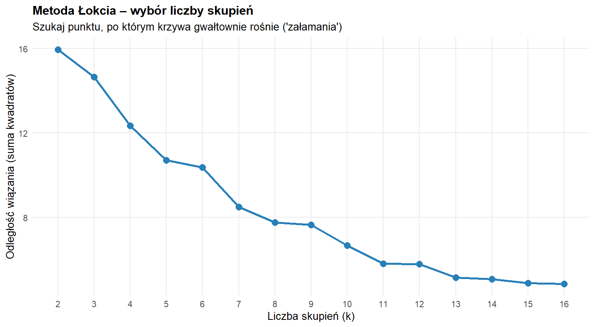
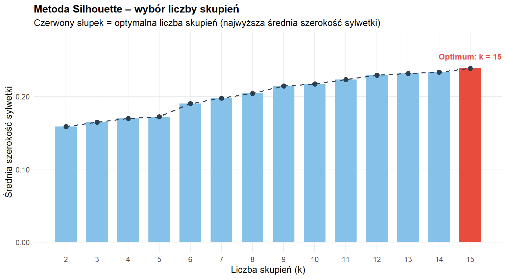
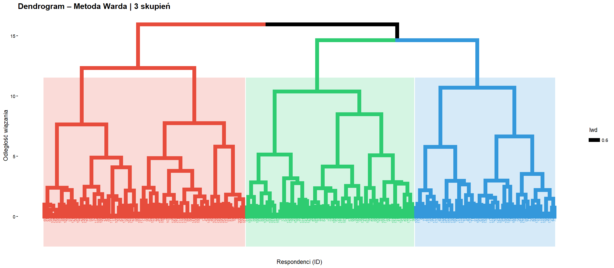
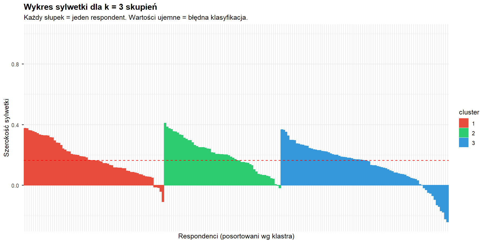
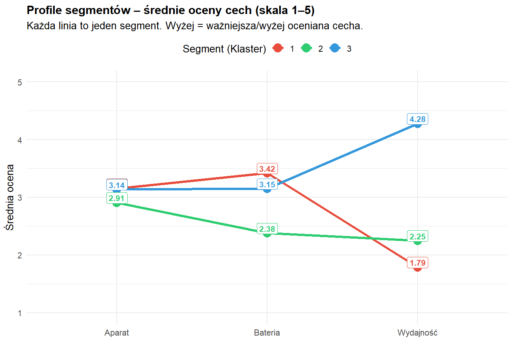
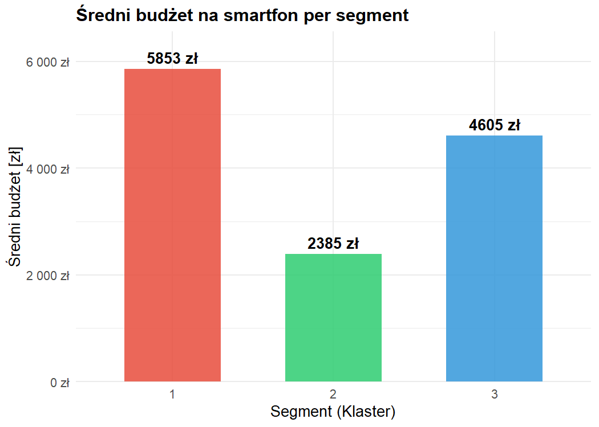
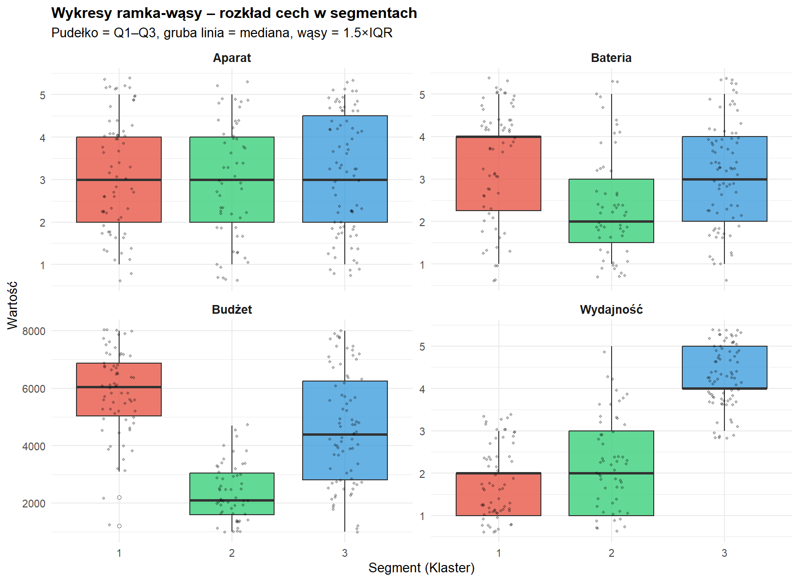

Hierarchiczna analiza skupień 200 respondentów oceniających baterie, aparat, wydajność i budżet zakupowy.
01 · Zidentyfikowane segmenty
02 · Diagnostyka metody

Krzywa odległości wiązania wykazuje wyraźne załamanie przy k = 3 — po tym punkcie dalszy podział na kolejne skupienia przynosi marginalny przyrost jakości kosztem rosnącej złożoności modelu. Wartość przy przejściu 2→3 jest znacząco wyższa niż przy 3→4, co jednoznacznie wskazuje na trzy skupienia jako optymalny podział badanej populacji.

Wykres potwierdza wybór k = 3: wartości silhouette wynoszą od 0.13 do 0.20, co klasyfikuje skupienia jako umiarkowanie spójne (przedział 0.10–0.25 jest typowy dla danych ankietowych na skali porządkowej). Wyższe wartości silhouette dla k = 2 sugerują, że granica między Klastrem 2 a pozostałymi jest najostrzejsza, jednak podział na 3 grupy wnosi istotną wartość interpretacyjną dla celów marketingowych.
03 · Struktura hierarchiczna

Dendrogram ujawnia trzy wyraźnie odseparowane gałęzie, które łączą się ze sobą przy stosunkowo dużych odległościach — co potwierdza istotność podziału. Najwcześniej (przy najniższych odległościach) łączą się wewnątrz siebie obserwacje należące do Klastra 3 (Entuzjaści Technologii), co świadczy o największej jednorodności wewnętrznej tej grupy. Klastry 1 i 2 wykazują nieco większy rozrzut wewnętrzny, lecz odległość między samymi klastrami jest wystarczająca, by uzasadnić odrębność każdego segmentu. Czerwona linia cięcia prawidłowo dzieli drzewo na trzy spójne podgrupy.

Klaster 2 (Pragmatyczni Oszczędni) osiąga najwyższą średnią szerokość sylwetki 0.20, co oznacza, że jego członkowie są najbardziej jednorodną i najlepiej oddzieloną grupą — wyraźnie odróżniają się od pozostałych. Klaster 3 ma najniższą wartość 0.13, co wskazuje na pewne nakładanie się preferencji z Klastrem 1 — obie grupy mają zbliżone oceny Baterii i Aparatu, różnią je przede wszystkim Wydajność i Budżet. Ujemne wartości sylwetki u nielicznych respondentów sugerują, że ok. 5–8% obserwacji balansuje na granicy między segmentami — co jest normalnym zjawiskiem w badaniach preferencji konsumenckich.
04 · Profilowanie segmentów

Wykres profili jednoznacznie wskazuje, że Wydajność jest zmienną dyskryminującą segmenty — to ona najbardziej różnicuje grupy. Klaster 3 osiąga tu aż 4.28 pkt, podczas gdy Klaster 1 zaledwie 1.79 pkt — różnica ponad 2.5 punktu na skali 5-stopniowej. Bateria i Aparat są stosunkowo podobne we wszystkich grupach (wartości 2.38–3.42), co sugeruje, że nie są kluczowymi czynnikami różnicującymi przy wyborze smartfona w badanej próbie. Strategicznie: komunikacja marketingowa do Klastra 3 powinna eksponować benchmarki procesora, do Klastra 1 — design i prestiż marki.

Rozpiętość budżetów jest ekonomicznie bardzo istotna: 2 385 zł vs 5 853 zł — to różnica 2.45×. Esteci Premium (Klaster 1) dysponują budżetem typowym dla segmentu premium/flagship, Pragmatyczni Oszczędni — dla segmentu budżetowego i mid-range. Entuzjaści Technologii (4 605 zł) mieszczą się w segmencie upper-mid, gdzie cena–wydajność jest optymalnym kryterium wyboru. Taka segmentacja budżetowa pozwala precyzyjnie dopasować ofertę handlową do każdego profilu nabywcy.

Box-ploty ujawniają dwa kluczowe wzorce: po pierwsze, Wydajność ma zaskakująco niską wariancję wewnątrz Klastra 3 — wąskie pudełko wskazuje na bardzo jednorodne preferencje, co czyni ten segment szczególnie przewidywalnym dla producentów. Po drugie, Bateria i Aparat wykazują znaczne nakładanie się rozkładów między klastrami — pudełka Q1–Q3 często się przecinają — co statystycznie potwierdza, że te cechy nie są głównymi wyznacznikami przynależności do segmentu. Budżet zaś ma najszerszy rozrzut w Klastrze 1, co sugeruje niejednorodność finansową wśród Estetyków Premium.
05 · Wnioski
Hierarchiczna analiza skupień metodą Warda z odległością euklidesową pozwoliła wyodrębnić trzy statystycznie uzasadnione segmenty klientów rynku smartfonów. Kluczową zmienną dyskryminującą okazała się Wydajność, a nie — jak mogłoby się wydawać intuicyjnie — Aparat czy Bateria. Budżet jest silnie skorelowany z przynależnością do segmentu, co daje solidne podstawy do budowania spersonalizowanej strategii cenowej i komunikacyjnej. Wartości silhouette na poziomie 0.13–0.20 są typowe dla danych ankietowych i nie podważają trafności segmentacji w kontekście jej użyteczności biznesowej.